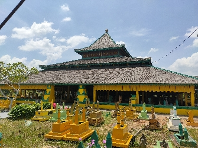

Wisata RELIGI yang ada di Pontianak , dan merupakan berziarah ke makam sultan abdurahman
Lets together.

Makam Kesultanan Pontianak di Batu Layang merupakan aset ketiga warisan Kesultanan Pontianak sesudah Istana Kadriah dan Mesjid Sultan Abdurrahman. Konon ketiga lokasi ini mempunyai letak dengan garis lurus dari
istana, dari arah timur ke barat. Komplek pemakaman dikhususkan bagi para Sultan Pontianak dan keluarganya. Makam Sultan Pontianak terletak di tepian Sungai Kapuas yang dahulunya hanya dapat ditempuh dengan
berjalan kaki, namun saat ini akses menuju lokasi tersebut sudah dapat mengunakan kendaraan. Makam Sultan Pontianak dikunjungi oleh peziarah dan wisatawan untuk mengetahui lebih lengkap tentang riwayat para
Sultan Pontianak, dengan segala bukti keberadaannya.
Makam Sultan Syarif Abdurrahman terbuat dari kayu belian bertingkat dua. Diukir dengan motif tumbuhan bersulur yang selalu ditutupi dengan kelambu berwarna terang. Makam Sultan yang sudah berusia hamper 200 tahun
itu telah banyak mendapat perbaikan dan perubahan. Disampingnya terdapat makam isterinya Puteri Utin Chandramidi yang wafat tahun 1246 H atau tahun 1830. Makam Sultan Syarif Kasim yang wafat tahun 1819 berpagar
kayu dan berkelambu kuning. Disampingnya terdapat makam seorang isteri dan anaknya. Begitupun makam Sultan Syarif Usman yang wafat ahun 1860, dimakamkan bersama isteri dan keluarganya. Makam Sultan Syarif Usman
dalam satu ruang berpagar khusus. Nisan para Sultan yang berbentuk gada, menunjukkan bahwa itu adalah makam seorang lelaki. Nisan keluarga perempuan bebrbentuk pipih.